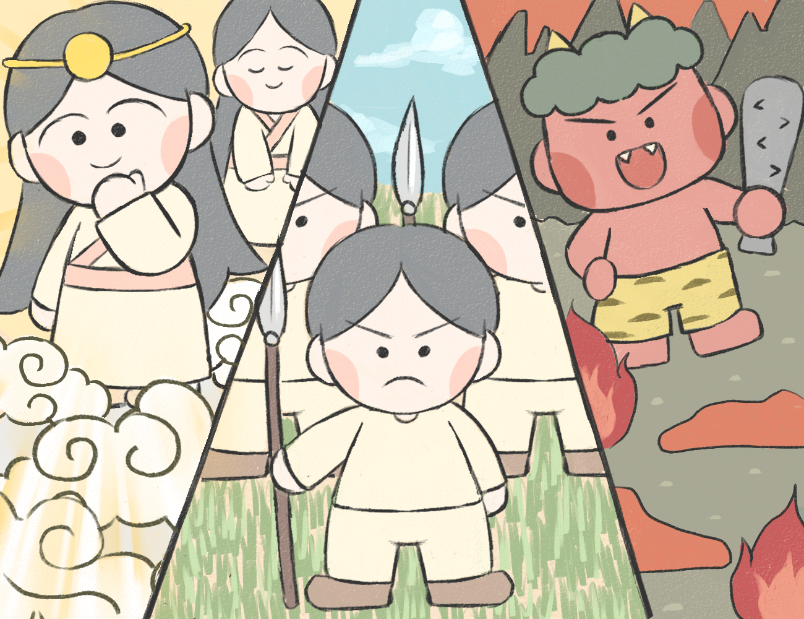
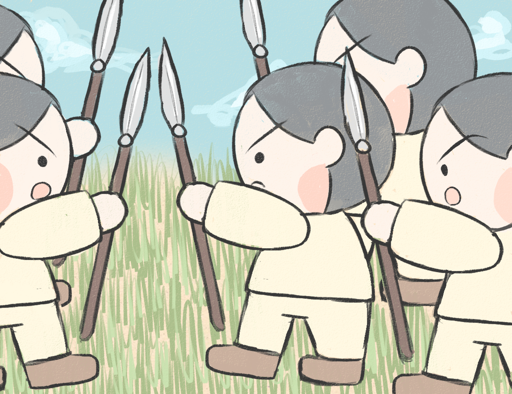
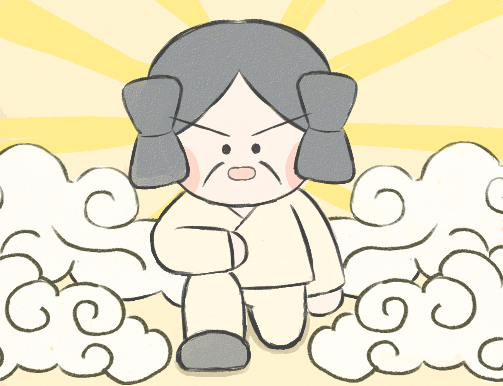

天孫降臨

その昔、天は神様たちが住む高天原、地上は葦原中国、地下は死者たちの住む黄泉の国と呼ばれていました。

ある日、太陽の神様であるアマテラスオオミカミが地上を見下ろすと、葦原中国は争いが絶えずとても混乱した状態でした。

アマテラスオオミカミは地上を素晴らしい国にするために、孫であるニニギノミコトに葦原中国を治めさせようとしました。

その際にニニギノミコトは草薙剣、八咫鏡、八尺瓊勾玉の三種の神器を授かりました。

それらを手にしたニニギノミコトは八百万の神を従え、高天原から雲をかき分けて葦原中国へと向かいました。これが